Cabo de Santo Agostinho
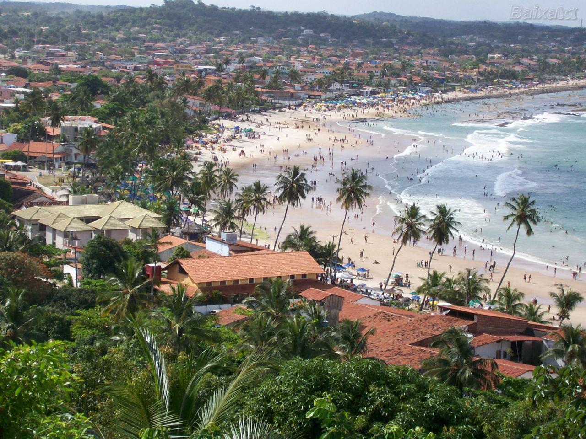Cabo de Santo Agostinho, localizado no litoral sul de Pernambuco, é um destino turístico de crescente popularidade, oferecendo uma combinação única de belezas naturais, rica história e tranquilidade. Com suas praias paradisíacas, como a Praia de Gaibu e a Praia do Paiva, além de atrativos históricos e culturais, a cidade tem ganhado destaque como um destino para quem busca descanso e lazer perto da natureza. Cabo de Santo Agostinho também é importante para o turismo histórico, com locais como o Forte de Santo Agostinho e a Igreja de Nossa Senhora da Guia, que trazem à tona a história colonial de Pernambuco.
A cidade também é famosa por sua crescente infraestrutura de resorts e restaurantes, atraindo tanto os turistas que buscam relaxamento quanto os interessados na cultura local.
Principais pontos turísticos
- Praia de Gaibu 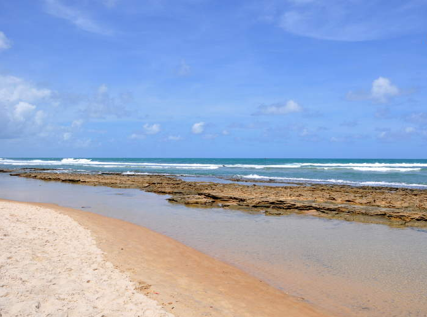
- Praia do Paiva 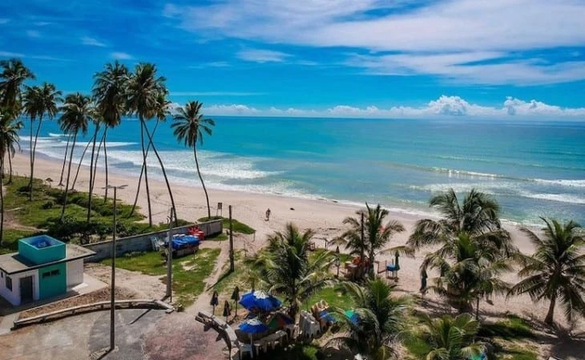
- Forte de Santo Agostinho 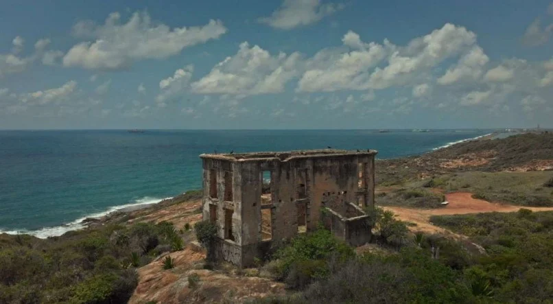
- Igreja de Nossa Senhora da Guia 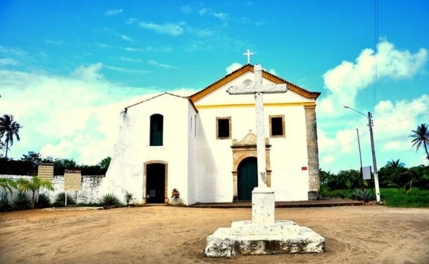
- Ilha de Itamaracá e Forte de São João 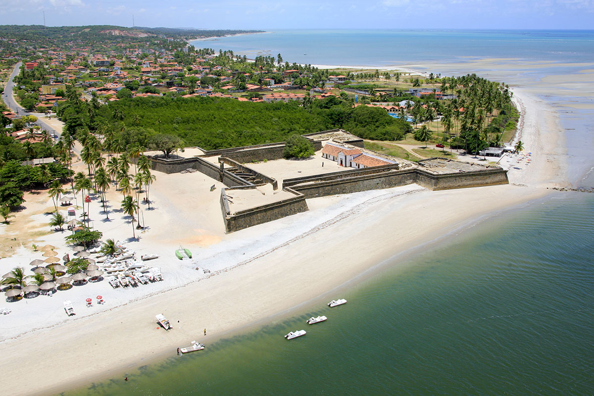
A Praia de Gaibu é uma das mais conhecidas e frequentadas de Cabo de Santo Agostinho, sendo ideal para banhos de mar e prática de esportes aquáticos. A praia tem uma ótima infraestrutura, com quiosques e restaurantes à beira-mar, além de um ambiente tranquilo, perfeito para quem busca relaxamento.
A região também é famosa por suas águas cristalinas e por ser um ponto de encontro para os amantes de surf e outros esportes náuticos.
A Praia do Paiva é famosa por suas águas mornas e calmas, além de suas falésias que tornam a paisagem ainda mais deslumbrante. A praia é uma das mais procuradas por quem quer desfrutar de um ambiente tranquilo, com acesso a bares e restaurantes sofisticados e uma vista incrível do mar.
A praia é um excelente local para caminhadas e momentos de descanso.
O Forte de Santo Agostinho é uma construção histórica datada do século XVII, que fazia parte do sistema de defesa da costa pernambucana durante o período colonial. O forte está localizado em uma área estratégica e oferece uma vista panorâmica do litoral. É um importante marco histórico e cultural, ideal para quem deseja conhecer mais sobre a história militar de Pernambuco.
A Igreja de Nossa Senhora da Guia, situada em uma área elevada da cidade, é uma das construções mais antigas de Cabo de Santo Agostinho, datando do século XVIII. Com sua arquitetura colonial e uma vista encantadora, a igreja é um importante ponto de peregrinação religiosa e cultural. Além disso, é um ótimo local para admirar o pôr do sol.
Embora não pertença diretamente a Cabo de Santo Agostinho, a Ilha de Itamaracá está próxima e é um ótimo passeio para quem visita a região. A ilha é famosa por suas praias e pelo Forte de São João, um importante sítio histórico. Muitos turistas que visitam Cabo de Santo Agostinho aproveitam para fazer um passeio de barco até a ilha.
Principais pontos gastronômicos
- Restaurante Paiva Grill 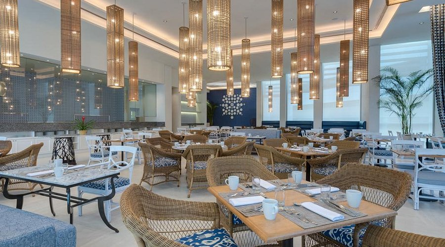
- Localização: Paiva.
- Bar e Restaurante O Guaiamum 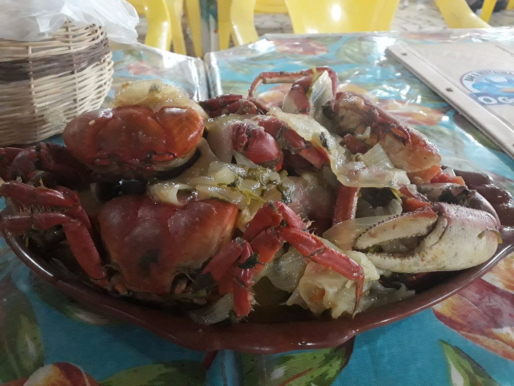
- Localização: Nazaré.
- Bar do Artur 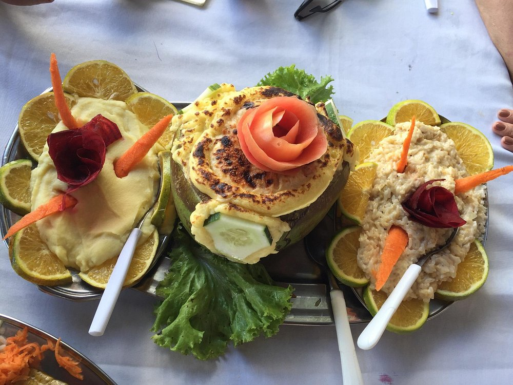
- Localização: Praia de Calhetas.
- Namoa Restaurante 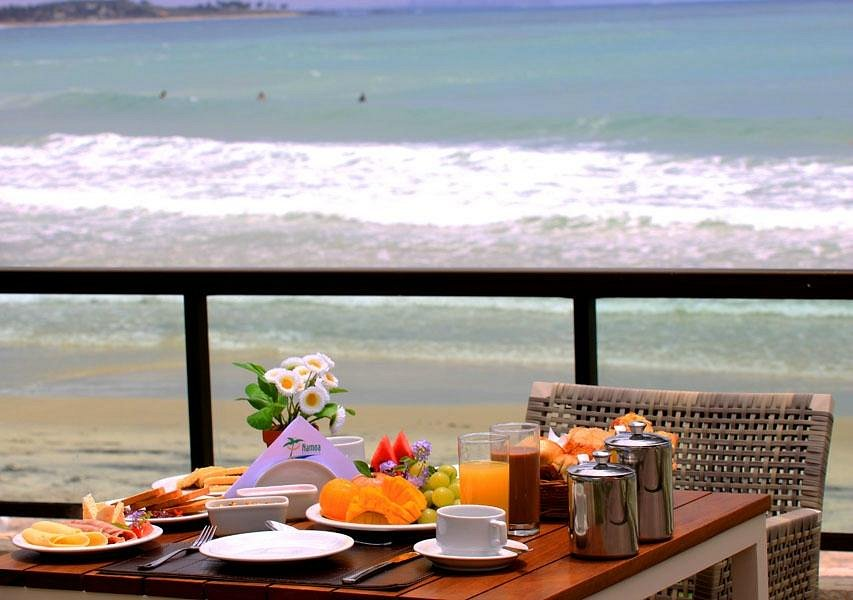
- Localização: Pontezinha.
Reúna-se com colegas, amigos e familiares para refeições e bebidas deliciosas em qualquer um dos nossos restaurantes. Saboreie as criações do chef Fernando Fonseca no ambiente elegante e contemporâneo do Paiva Grill. Desfrute de um café da manhã tranquilo em nosso lindo terraço ou de um jantar íntimo no restaurante. O menu à la carte inclui combinações de sabores requintadas, arranjos criativos e vinhos de alta qualidade, enquanto deliciosos pratos locais e internacionais compõem o tentador bufê
O Restaurante Paiva Grill ainda conta com opções para vegetarianos.
O melhor em frutos do mar da região do litoral sul de Pernambuco, na Estrada da belíssima Praia de Calhetas. O Guaiamun apresenta amplo cardápio, com pratos bem temperados e porções bem servidas. O local é simples porém muito aconchegante. Equipe de profissionais atenciosos e dedicados. Ótimo local para se aproveitar com a família ou para se tomar uma gelada em época de calor.
O Guaiamum é conhecido por sua especialidade em caranguejos e guaiamuns, proporcionando uma experiência gastronômica única.
Com uma atmosfera acolhedora, o Bar do Artur é uma escolha perfeita para quem busca pratos regionais bem preparados. Os frutos do mar frescos são a estrela do cardápio, enquanto os clientes desfrutam de uma vista deslumbrante da praia de Calhetas.
Este estabelecimento se destaca por sua cozinha contemporânea e criativa. O Namoa oferece pratos sofisticados com ingredientes locais, proporcionando uma experiência gastronômica única para os amantes da boa comida.
De atendimento ágil e cardápio impecavelmente temperado e generoso, o Namoa é um ótimo local para se desfrutar de uma ótima refeição enquanto se admira as belezas do litoral pernambucano.
Principais pontos culturais
- Cultural e Patrimonial da cidade 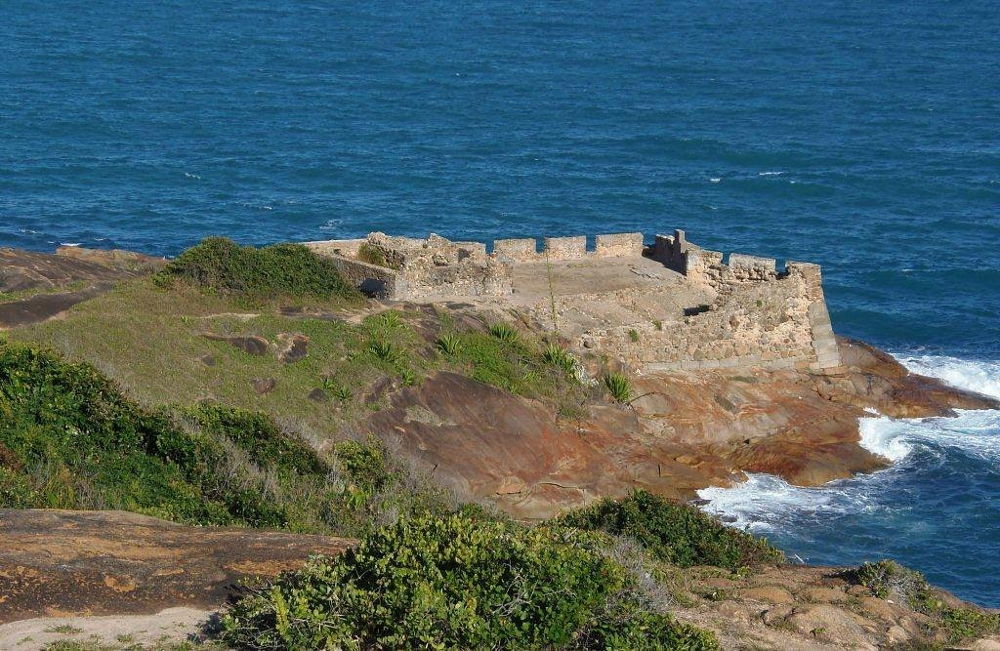
- Localização: Diversos pontos da cidade.
- Capela do Engenho Novo 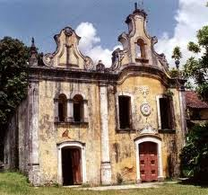
- Localização: Área rural de Cabo de Santo Agostinho.
- Museu do Pescador 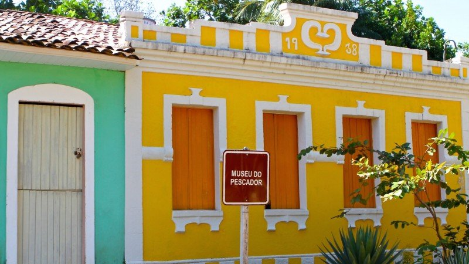
- Localização: Pontezinha.
O patrimônio histórico e cultural de Cabo de Santo Agostinho pode ser explorado em diversos pontos da cidade, como a Igreja de Nossa Senhora da Guia, o Forte de Santo Agostinho e outras construções coloniais. A cidade também é rica em manifestações artísticas e folclóricas, que são celebradas principalmente durante o Carnaval e festas tradicionais.
A Capela do Engenho Novo, localizada em Cabo de Santo Agostinho, Pernambuco, é um importante patrimônio histórico e cultural da cidade. Datada do século XVIII, a capela faz parte da antiga estrutura do Engenho Novo, uma antiga fazenda de açúcar da região. A capela foi construída em estilo barroco e tem grande relevância para a história local, pois simboliza o período colonial e a forte presença da produção açucareira na economia de Pernambuco.
Apesar de estar em uma área rural, a Capela do Engenho Novo atrai visitantes interessados na história da região e na arquitetura colonial. O local é também um ponto de referência religiosa, com celebrações e eventos litúrgicos realizados periodicamente, preservando a tradição e a cultura local. A capela está situada em meio a um cenário natural, tornando-se um espaço tranquilo para contemplação e aprendizado sobre o passado de Cabo de Santo Agostinho.
O Museu do Pescador está localizado em Cabo de Santo Agostinho, Pernambuco, e é um espaço dedicado a preservar e promover a cultura pesqueira local, que tem grande importância para a economia e a tradição da região. O museu busca resgatar e divulgar a história da pesca artesanal e das comunidades pesqueiras de Cabo de Santo Agostinho, através de um acervo que inclui ferramentas de pesca, fotografias antigas, equipamentos náuticos e objetos utilizados pelos pescadores ao longo dos anos.
Além de seu acervo, o Museu do Pescador também realiza atividades educativas e culturais, proporcionando aos visitantes uma compreensão mais profunda do modo de vida dos pescadores locais, suas tradições e a relação deles com o mar. O museu se destaca como um importante ponto de valorização da cultura popular e do patrimônio imaterial de Pernambuco, sendo uma atração tanto para turistas quanto para moradores da região interessados em conhecer mais sobre a história e as práticas da pesca artesanal.